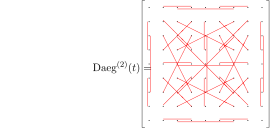

Next: Frame order and the Up: Frame order theory Previous: Frame order theory Contents Index
Let μ(t) be a time dependent vector defined within an arbitrary fixed frame F as
| μ(t) = δx, δy, δz | (12.1) |
where δi is the time dependent direction cosine between the unit vector and the axis i of frame F. Key for understanding the statistical mechanics of a second rank rotational process is the time dependence of the outer product
| P(t) | = μ(t)⊗μ(t), | (12.2) |
| = . | (12.3) |
Assuming statistical mechanical ensemble averaging, the observable expected value of the matrix P(t) is a matrix which defines the ordering of the vector μ(t) within the frame F. This order matrix is
where
| Sij(t) = . | (12.5) |
Because of the symmetry Sij(t) = Sji(t), the order matrix has 6 unique elements.
Assuming that the time dependent process modulating μ(t) is much faster than the evolution period tmax of the observed physical interaction, for example the weak molecular alignment process which induces residual dipolar couplings (RDCs) and pseudo-contact shifts (PCSs) in NMR, the order matrix which gives rise to the non-isotropic effect is equation 12.4c at tmax = ∞. Hence the non-zero order matrix is
| S(∞) = . | (12.6) |
Let the frame C(t) be time dependent within an arbitrary fixed frame F. After a time period t the shift from C(0) to C(t) is given by the rotation
| R(t) = ≡, | (12.7) |
where rotation matrix element cij is equivalent to the direction cosine δij between axis i of C(t) and axis j of C(0). For second rank physical processes modulated by rotational motions, analogously to the outer product expected value of 12.4b, the time dependence of the process is governed by the outer product
This is a rank-4, three dimensional rotational tensor defining the ordering of the frame C(t) after a period t within the original frame C(0). This is the definition of the second degree frame order tensor.
The matrix form of the second degree frame order tensor in rank-2, 9D Kronecker product notation is
where
| ≡. | (12.10) |
This is a rank-2, 3D order matrix of rank-2, 3D order matrices. To see this, the T14 rank-4 matrix transpose of Daeg(2) in Kronecker product notation is
The 3D matrix in the top left corner is the ordering of the x-axis with itself, the central matrix is the ordering of the y-axis with itself, and the bottom right is the ordering of the z-axis with itself. The off-diagonal 3D matrices are the cross-correlations between the three axes. Using the notation ex, ey and ez for the orthogonal axis system of the time dependent frame C(t), the second degree frame order matrix can be written as
| DaegT14(t) = . | (12.12) |
If the rank-2, 3D order matrix between the axes A and B is denoted as
| SAB(t) = , | (12.13) |
then the frame order matrix is
| DaegT14(t) = . | (12.14) |
The frame order matrix is diagonally symmetric, as can be seen in the T14 transpose of the matrix in rank-2, 9D Kronecker product form (equation 12.11, hence for the second degree frame order matrix there are 45 unique elements. For the 9D Kronecker product notation of equation 12.9, this transformed diagonal symmetry can be schematically represented as

When rotational symmetries are present in the time modulation of the frame C(t) then, according to Perrin (1936), the averages of the double products where an index appears only once is zero. In this case, the active frame order matrix elements are
This matrix consists of 15 unique elements. It is the weighted sum of the three rank-4 identity matrices I1, I2 and I3.
According to Spencer (1980), the rank-4 identity matrices are defined as
where δij is the Kronecker delta and ei are the axes. In general, the identity matrix is
| I = λδijδkl + μδikδjl + νδilδkjei⊗ej⊗ek⊗el.
|
(12.17) |
Expanding 12.16a to 12.16c to 9D Kronecker product matrix form,
![\begin{subequations}\begin{align}
I_1 &=
\left[
\begin{array}{*{9}{@{}>{\centeri...
.... & . & . & . & . & . & . & 1
\end{array}\right] .
\end{align}\end{subequations}](img326.svg) |
The identity matrices are related to each other via the rank-4 matrix transposes
 |
In the case of unrestricted motions, the time limits of the frame order matrix are
| Daeg(2)(t = 0) = I1, | (12.20) |
and
| Daeg(2)(t = ∞) = I2. | (12.21) |
The rank-4, 3D frame order tensor of equation 12.8 on page ![[*]](crossref.png) was derived for second order rotational physical processes.
However this can be generalised for physical processes of all orders.
The tensor power of the time dependent rotation matrix R(t) is defined as
was derived for second order rotational physical processes.
However this can be generalised for physical processes of all orders.
The tensor power of the time dependent rotation matrix R(t) is defined as
| R⊗n(t)R(t)⊗ ... ⊗R(t), | (12.22) |
where the outer product is repeated n times. Therefore let the frame order tensor be defined as
where n is the order of the physical process. The rank of the 3D tensors is 2n. The first few frame order tensors of rank-2, rank-4, rank-6, and rank-8 are
 |
In index and direction cosine notation,
 |
The rotation matrices of the general frame order tensor of equation 12.23 can be decomposed into a time dependent and time independent component. The original frame F can be defined as the motional eigenframe of the system and a new arbitrary frame F' introduced. The forward rotation from the reference frame F' to the motional eigenframe F will be denoted as Reigen. The rotation matrix decomposition is
| R'(t) = Reigen⋅R(t)⋅ReigenT. | (12.26) |
Hence the second degree frame order tensor is
| Daeg(2) = , | (12.27) |
Using the mixed product property
| AC⊗BD = (A⊗B)(C⊗D), | (12.28) |
the arbitrary frame, second degree frame order matrix is
 |
Generalising from the 2 to the n th-order, the generalised frame order tensor rotation is
For the modelling aspect of the frame order theory, one more rotation is required. In equation 12.30, it is assumed that the starting position for the moving rigid body is that of its motional average. However in the initial 3D structure, this is not the case and an additional rotation to the average position Rave is required. Taking this into account, the generalised frame order tensor is defined as
| Daeg(n)(t) = Reigen⊗n⋅⋅ReigenT⊗n⋅RaveT⊗n, | (12.31) |
where Reigen is the eigenframe rotation matrix, R(t) is the time dependent rotation matrix, Rave is the rotation from the average domain position to the motional eigenframe, and ⊗n is the n th tensor power. In applications to physical processes which require numerical integration, pre-rotating the rigid body by Rave to the average position is equivalent but more numerically efficient. Therefore the Rave can be dropped and equation 12.30 used instead.
The relax user manual (PDF), created 2020-08-26.

![$\displaystyle \overline{{\left[
\begin{array}{@{}ccc;{2pt/4pt}ccc;{2pt/4pt}ccc@...
...a_{zz}\delta_{zx} & \delta_{zz}\delta_{zy} & \delta_{zz}^2
\end{array}\right]}}$](img311.svg) ,
,